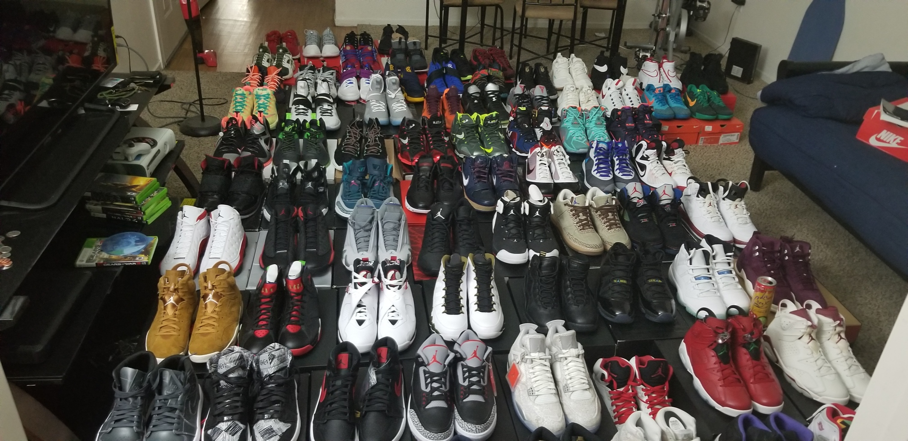
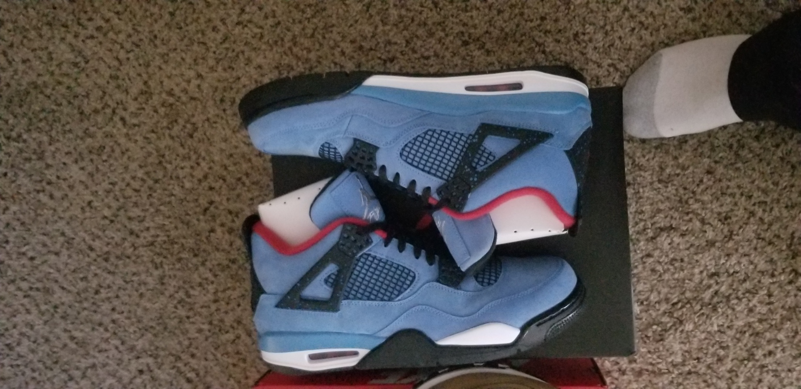

My love for sneakers began at a young age. Due to my family's poor economic standing, my parents was not able to afford the more prestigous brands. I felt a little ostracized as most of my classmates owned the latest and greatest sneakers. In 4th grade, I can remember receiving my first pair of Nike's from my mother on Christmas. The overwhelming joy I felt is a moment I will not forget. My friends were extemely suprised to watch me struct around in my new shoes from the world's top brand. Moving forward, I was able to continue to secure shoes that were of name brand quality on a occassional basis but they were not exactly the shoes I dreamed of having. Air Jordans were considered the cream of the crop and the price of them continued to reamin out of reach. When I became of age, I was finally able to afford the sneakers I always wanted. Price was no longer a deterrent. Over the past 10 years, I purchased a variety of sneakers from Air Jordan and Nike culminating in a total value of over 13,000 dollars.
*This is just a snippet of the shoes own. I currently own about 92 pairs.
*Above is a image of the Air Jordan 4 Travis Scotts. Currenttly the shoes are valued bewtween 800 and 1000 according to the website StockX
I was introduced to the world of financial investing after opting into the military's version of the 401k plan called TSP (Thrift Savings Plan). I did plenty of research getting as much information as I possibly could on investing in index founds. Eventually I would stumble upon financial guru Dave Ramsey. His Youtube videos and his website daveramsey.com provided good information on not only how to invest but to build financial wealth over time. I was fascinated about the possbility of building wealth by allowing your money to work for you. I currently invest in TSP as well as two additional index funds the S&P 500 and the Nasdaq 100. Both have performed extraordinarily well over the past 10 years yeilding great returns.